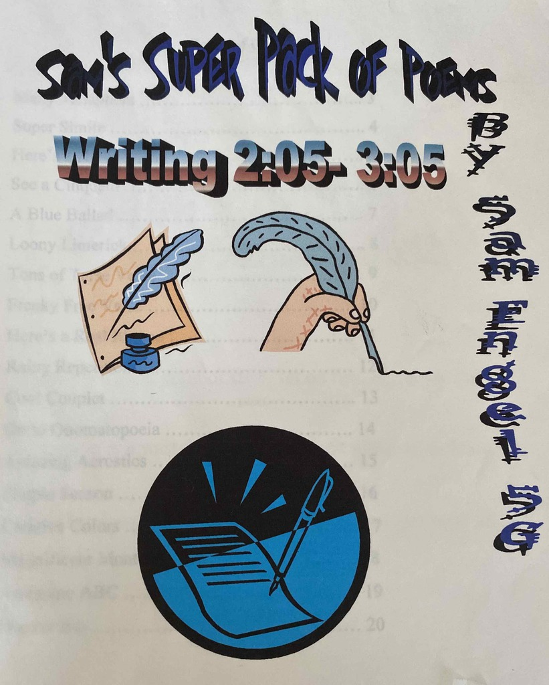

sam engel
I'm a software engineer. You can reach me at samuel.d.engel@gmail.com. I use he/him/his pronouns. You can find some things I've made on this web page!
 sdf text
sdf text
SDF Text is a small webgl and javascript tool for turning text into customizable word art. You know, word art, like you might have used on your 5th grade poetry assignment:
 I owe a lot of the inspiration behind SDF Text to Valve's 2007 paper on SDFs and The Book Of Shaders's practical write-up of shapes and shaping. This project was a treat from start to finish! Whenever I got tired of writing javascript I could play around in the live glsl shader editor to come up with new rendering styles. At some point I may revisit this to replace the old cpu-side SDF generation with a gpu-side jump flood approach, but overall I'm pleased with how it came out. Here are some of my favorite results:
I owe a lot of the inspiration behind SDF Text to Valve's 2007 paper on SDFs and The Book Of Shaders's practical write-up of shapes and shaping. This project was a treat from start to finish! Whenever I got tired of writing javascript I could play around in the live glsl shader editor to come up with new rendering styles. At some point I may revisit this to replace the old cpu-side SDF generation with a gpu-side jump flood approach, but overall I'm pleased with how it came out. Here are some of my favorite results:



 crossword corpus
crossword corpus
Crossword Corpus started as a complaint: why do words like ALOE, ERA, and OAT show up so often in crossword puzzles? It turned into a kind of blog/web app hybrid about language, data, and crossword puzzles.

 Crossword Corpus was a truly full stack project. First of all, I needed data, so I put together a scraper in bash and collected two and a half decades of puzzles. To read them, I had to build a parser for .puz files. Once I could actually interpret the puzzles, I ingested them into a postgres database behind a node/express web app on heroku. The app hosts blog pages, exposes an api for running data analysis, and serves the results into tables and graphs by way of plotlyjs and HTML CustomElements. Once I could run tests and visualize findings, it was finally time to read up on corpus linguistics and get some answers.
Crossword Corpus was a truly full stack project. First of all, I needed data, so I put together a scraper in bash and collected two and a half decades of puzzles. To read them, I had to build a parser for .puz files. Once I could actually interpret the puzzles, I ingested them into a postgres database behind a node/express web app on heroku. The app hosts blog pages, exposes an api for running data analysis, and serves the results into tables and graphs by way of plotlyjs and HTML CustomElements. Once I could run tests and visualize findings, it was finally time to read up on corpus linguistics and get some answers.

 It's always great practice to build an app from the ground up. I used pretty standard technologies throughout, but there were still a couple of good surprises! I ran afoul of some fun data management problems, namely high network usage (brotli and gzip to the rescue), and large language corpora (better data structure efficiency helped). Also, I was happy to find that CustomElements and custom HTML events are a viable alternative to front-end frameworks. They worked great! Along the way I learned a lot about language, so give the blog a read if you're interested!
It's always great practice to build an app from the ground up. I used pretty standard technologies throughout, but there were still a couple of good surprises! I ran afoul of some fun data management problems, namely high network usage (brotli and gzip to the rescue), and large language corpora (better data structure efficiency helped). Also, I was happy to find that CustomElements and custom HTML events are a viable alternative to front-end frameworks. They worked great! Along the way I learned a lot about language, so give the blog a read if you're interested!
 arsiliath compute workshop
arsiliath compute workshop
In December 2020 I took Arsiliath's workshop on creating biology-inspired simulations using compute shaders in Unity. I've been increasingly excited to dive into the world of compute as it's seen more and more use across real-time 3d. In the workshop, I learned how to run compute shaders on their own and how to integrate them into a pipeline to dispatch other gpu operations. We implemented algorithms from the literature on cellular automata, reaction diffusion, physarum, primordial particle systems, flocking, etc. The gpu's sheer scalability combined with Arsiliath's guidance on artistic workflow made it easy to "discover" new patterns. Playing with variables, tweaking algorithms, and experimenting with rendering styles were a big part of the fun!
Reaction diffusion simulation
Simple cyclic cellular automaton
Diffusion-limited aggregation
Cellular automaton using "rule 388"
Three primordial particle systems
Reaction diffusion algorithm visualized in 3d
Primordial particle system in 3d
 mom's freecell
mom's freecell
I made this freecell for my mom, who used to play religiously and who recently complained to me that she couldn't find any simple, minimal versions online. My implementation owes its chassis and much of its polish to a Deck of Cards javascript library, which I overrode and extended to create the gameplay. There is a challenge and a pleasure in adapting someone else's code. I had fun trying to extrapolate data structures for the cascades, foundations, and free cells from the library's notion of a deck.


 folds
folds


 checkerboard
checkerboard
Checkerboard is a threejs/webgl take on a doodle I've done since I was a kid (it looks like this):

 Initially conceived as an excuse to play with full-screen quads + frag shaders, Checkerboard grew into a small-scale particle system driven by a physical simulation running on the gpu. I had a blast working out a Runge-Kutta integrator and some simple lens optics!
Initially conceived as an excuse to play with full-screen quads + frag shaders, Checkerboard grew into a small-scale particle system driven by a physical simulation running on the gpu. I had a blast working out a Runge-Kutta integrator and some simple lens optics!

 waves
waves
I built Waves for the Global Game Jam 2017. It's an expansion and variation on an existing threejs demo. No small part of the ~40 hours jamming time went towards creating the canvas/key control scheme and tuning the simulation for gameplay (there was a nasty energy leak from the input model). I stuck with pretty simple shader logic but I ended up happy with the look!

 robotanical
robotanical
Ethan Edwards and I collaborated on Robotanical for ProcJam 2016, although busy schedules left it in a somewhat unfinished state. The idea was to cultivate a virtual garden of plants grown by Lindenmayer systems and parsed into svg by a turtle renderer. The version here demonstrates the core functionality by implementing a few well-known L-systems.

 walk
walk
Walk is an animation/experiment that attempts to fill a discretized grid by propagating a random(ish), non-self-intersecting path through it. Since the odds against that are pretty high, Walk is more like a movie of a computer painting itself into a corner over and over. Try changing the step pattern!

 phenomenol
phenomenol
I should probably explain the controls to you now. When I made Phenomenol back in 2014, I wanted it to be a sort of 3d line rider. There are two third-person points of view from which you can draw platforms in the space (mouse to draw, z to toggle pov). While in this drawing mode, you can control (using wasd) a marker that determines how far away from the camera the platforms will be placed. The idea is to place platforms so that the first-person character (wasd + mouse) can, by traversing them, collect the spinning cubes around the level. If you run out of platforms, don't worry; in first-person mode you can shoot (lmb) projectiles to collect/recall them. Last thing: those blue boxes on the ground in each corner will launch you into the air, which can be helpful. Phenomenol came out a tedious and unforgiving game, but if you approach it with patience it ~can~ be (strangely) compelling.
NB: Phenomenol was original made in a much older version of unity, and rebuilding it for the post-flash era introduced some strangeness. Then again, it was pretty strange to begin with...

 epr&d
epr&d
For the Global Game Jam 2014, I teamed up with Ethan Edwards to make EPR&D. There's always a theme for GGJ and in 2014 it was something about what we see not being what really is or...I don't remember. But I'd had this idea in my head for a while about a game whose mechanic only works when you can't see it work, and we decided to go with that.
NB: This is a rebuild of an old unity project and as such may have even more bugs than it did originally.